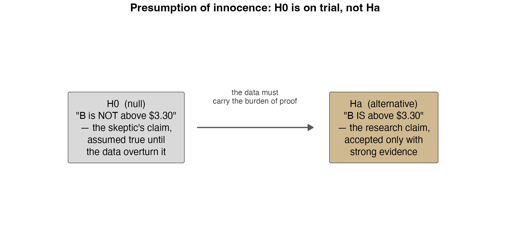
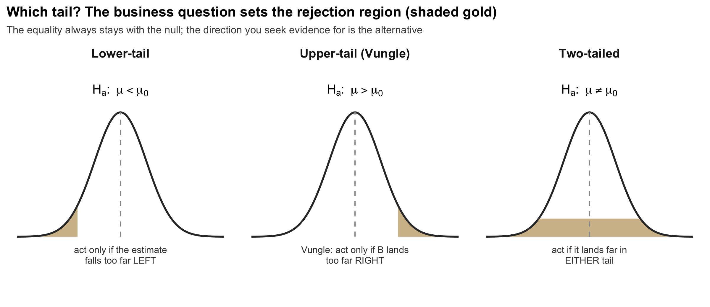
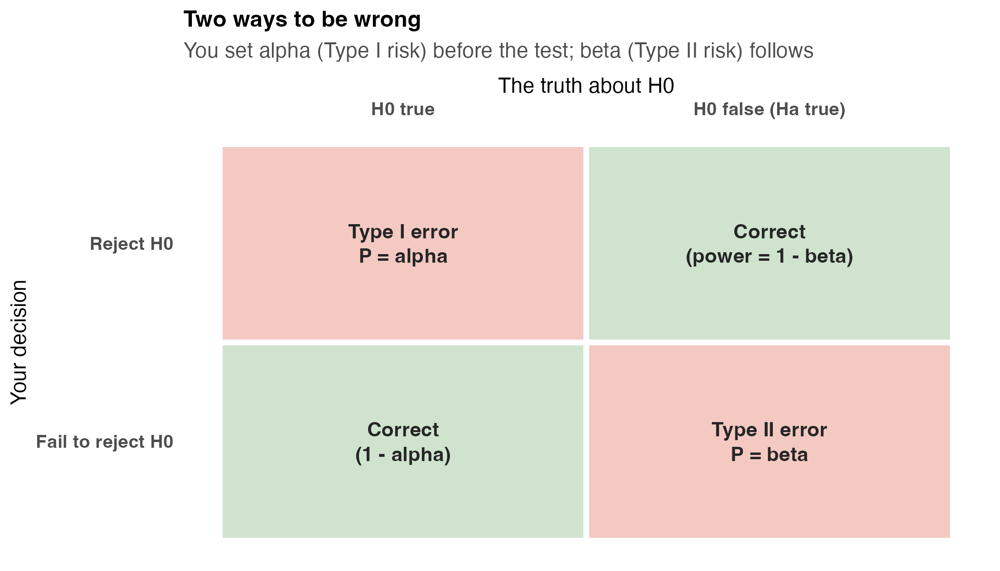
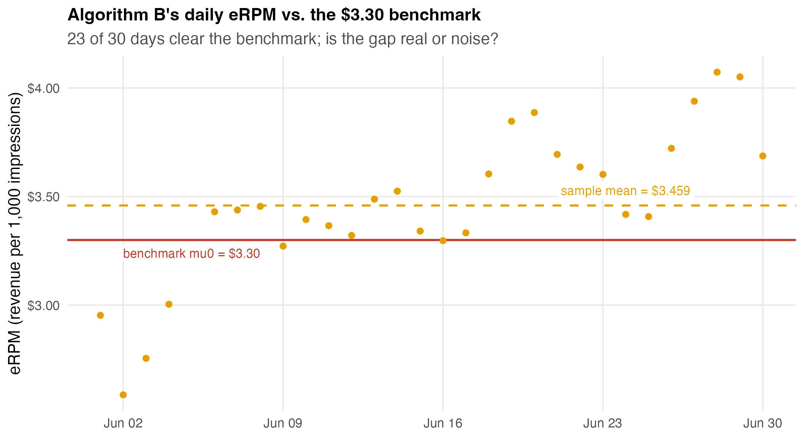
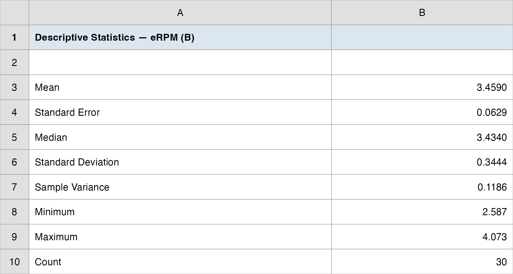
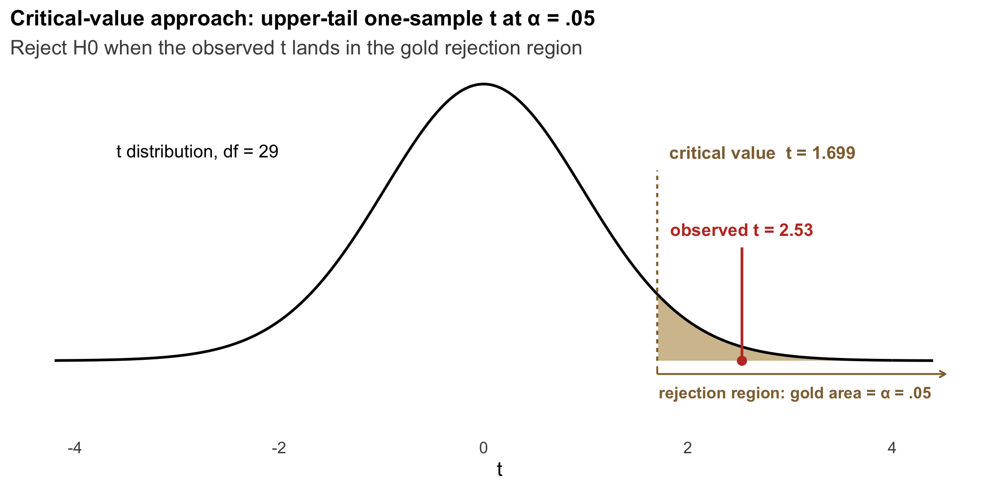
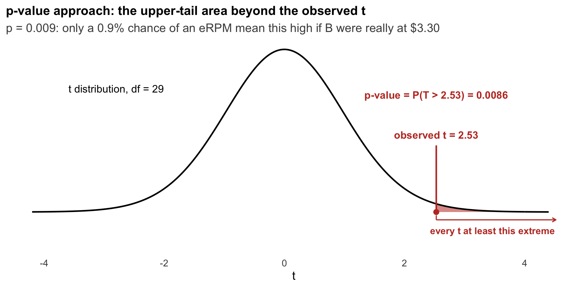
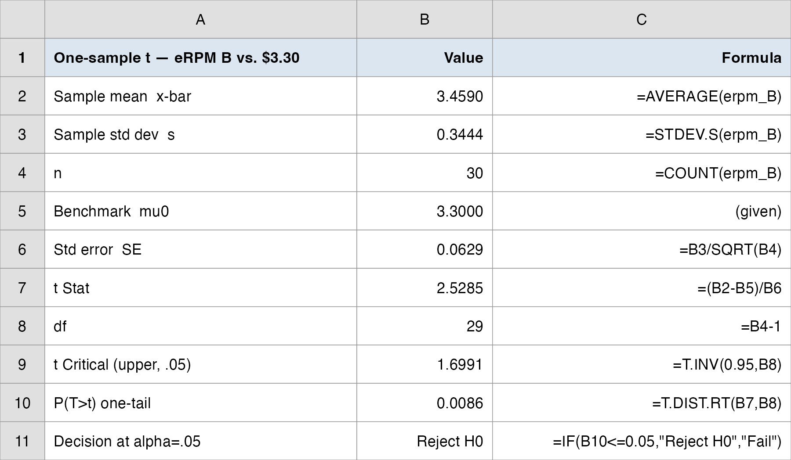
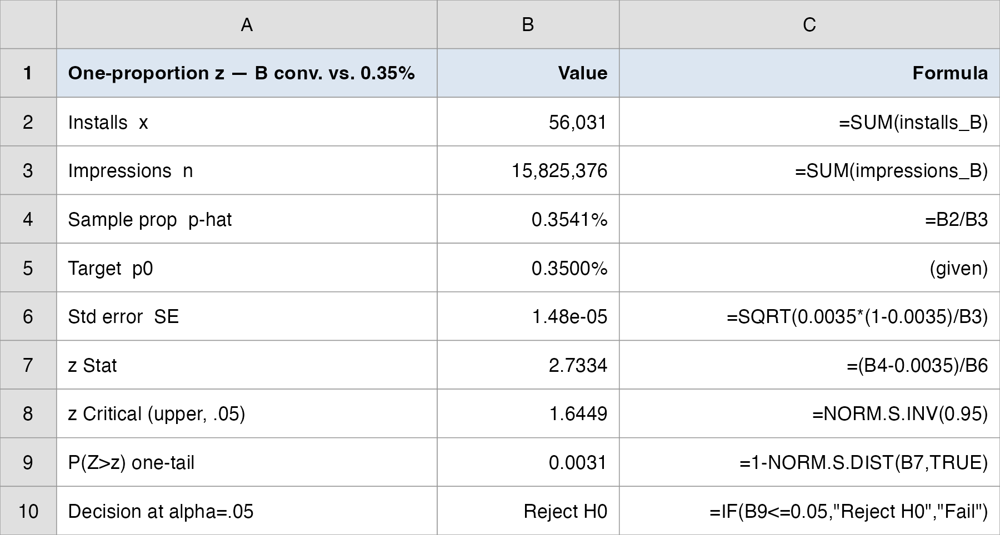
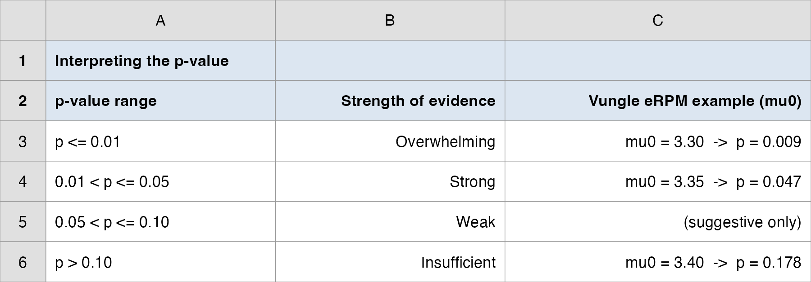

QM 67000: Business Analytics
Hypothesis Testing I: Inference About One Population
Davi Moreira
Overview
- Case Spotlight: A/B Testing at Vungle
- From estimating to testing a claim
- Developing \(H_0\) and \(H_a\); the skeptic’s burden of proof
- Type I and Type II errors; the level of significance \(\alpha\)
- The \(p\)-value and critical-value approaches
- Lecture 1: one-sample \(t\) about a mean (is B’s eRPM above $3.30?)
- Lecture 2: one-sample \(z\) about a proportion (does B clear the conversion target?)
- Reading \(p\)-values like a manager
- The rule that sets up Topic 9: testing two populations
Case Spotlight: A/B Testing at Vungle
June 2014: One Month of Data, One Funding Decision
Vungle is a mobile ad-tech startup: it serves 15-second video ads inside other companies’ apps and earns revenue mainly when a viewer installs the advertised app (cost-per-install).
Two analysts built a new ad-serving algorithm (B) and ran it head-to-head against the existing one (A) for the entire month of June 2014. The metric that pays the bills is eRPM, effective revenue per 1,000 impressions.
We have already described the data (Topics 1–2) and estimated B’s true mean eRPM with a confidence interval (Topic 7). Now, as Vungle’s manager, you need a yes/no decision.
Up to now we asked “what is B’s true eRPM?” Today we ask a sharper question: “is it above a line we care about?”, and we answer with a test.
The Brief: Roll Out B, or Stay With A?
“We fund algorithm B only if its mean eRPM clears the historical $3.30 benchmark that algorithm A has long delivered. B’s 30-day average looks like $3.46, but is that really above $3.30, or could a sample of 30 noisy days land there by luck? Test it.”
The big call is roll out B, or stay with A? This topic answers the first piece of it. Today’s question: is the mean really above the benchmark?
This is the canonical one-population question in business: is a parameter on the right side of a line? A benchmark, a target, a contractual threshold.
How today’s studio runs: I demo each test on a textbook example, then a good analyst’s work goes up for you to reproduce and interrogate, then we debrief the funding call together. Two lectures, two tests.
By the end, you make the funding recommendation, with the statistics to back it up.
Estimation vs. Testing: Two Jobs for the Same Sample
In Topic 7 we estimated: built a confidence interval, a range of plausible values for B’s true mean eRPM.
Today we test: weigh the evidence for a specific claim about that mean.
| Interval estimation (Topic 7) | Hypothesis testing (today) | |
|---|---|---|
| Question | What is the parameter? | Is the parameter on one side of a line? |
| Output | A range (the CI) | A decision: reject \(H_0\) or not |
| Knob you set | Confidence level \(1-\alpha\) | Significance level \(\alpha\) (the risk you accept) |
| The “answer” | Margin of error | \(p\)-value / critical value |
- They are two views of the same sampling logic, and we will see at the end they agree.
Developing the Hypotheses
\(H_0\) Is on Trial: the Skeptic’s Position

- The null hypothesis \(H_0\) is the status quo: “nothing new here, B is no better than the $3.30 line.” It is assumed true until the data overturn it.
- The alternative \(H_a\) is the research claim (“B beats $3.30”), accepted only with strong evidence. The data carry the burden of proof.
Which Claim Goes Where?
Rule: put what you want to prove in \(H_a\); the equality always lives in \(H_0\).
Two ways the question arrives in business:
- Research hypothesis: gather evidence for something new (new algorithm, new bonus plan, new drug). Start with \(H_a\): “the new thing works.”
- Challenge an assumption: test whether a long-held claim still holds (a label says 67.6 oz; a goal is 12 minutes). Start with \(H_0\): “the claim is true.”
Vungle is a research case: we want evidence that B clears $3.30, so that claim is \(H_a\).
\[ H_0: \mu \leq 3.30 \qquad \text{vs.} \qquad H_a: \mu > 3.30 \]
A Question That Often Comes Up
A question that often comes up at this point:
We are hoping B beats $3.30, so why is “B beats $3.30” the alternative and not the null?
Short answer: the test makes the data earn the conclusion. We start by assuming B is no better (\(H_0\)) and only fund B if the evidence is strong enough to overturn that. Putting the claim we want in \(H_a\) means a “fund B” verdict survives a skeptic’s challenge, not just a hopeful read of one good month.
Three Forms: the Business Question Picks the Tail

- Upper-tail (Vungle): we only act if B is better; “worse” and “same” lead to the same decision (don’t fund).
- Lower-tail: we act if the parameter falls below a line (a defect rate above a ceiling, response time over a goal).
- Two-tailed: any difference matters (a fill weight that is too high or too low).
The Three Forms in Symbols
- For a population mean \(\mu\) against a hypothesized value \(\mu_0\):
\[ \begin{aligned} \text{Lower-tail:} \quad & H_0: \mu \geq \mu_0 \quad &&H_a: \mu < \mu_0 \\ \text{Upper-tail:} \quad & H_0: \mu \leq \mu_0 \quad &&H_a: \mu > \mu_0 \\ \text{Two-tailed:} \quad & H_0: \mu = \mu_0 \quad &&H_a: \mu \neq \mu_0 \end{aligned} \]
The equality (\(=\), \(\leq\), \(\geq\)) is always part of \(H_0\): it is the value we compute the test statistic against.
The direction of \(H_a\) comes from the business decision, not from peeking at the data.
Two Ways to Be Wrong
Type I and Type II Errors

- Type I error: reject \(H_0\) when it is true (fund B though it really isn’t above $3.30, a costly false alarm).
- Type II error: fail to reject \(H_0\) when it is false (miss a genuinely better B, a missed opportunity).
You Control \(\alpha\); \(\beta\) Follows
The level of significance \(\alpha\) = the probability of a Type I error you are willing to tolerate. You set it before seeing the data; usually \(\alpha = 0.05\) (sometimes \(0.01\) or \(0.10\)).
\(\beta\) = the probability of a Type II error. You do not set it directly; it follows from \(\alpha\), the sample size, and how far the truth is from \(H_0\).
The trade-off: for a fixed sample, lowering \(\alpha\) (fewer false alarms) raises \(\beta\) (more missed effects). The only way to shrink both is a larger sample.
Language rule: when the evidence is weak we say “fail to reject \(H_0\),” never “accept \(H_0\).” Absence of proof is not proof of absence; we just did not gather enough evidence to overturn the skeptic.
Why the Asymmetry Matters for Vungle
A Type I error funds an algorithm that is not actually better: the company spends on a non-improvement and the analyst’s credibility takes the hit.
A Type II error walks away from a real improvement: money left on the table, but no bad rollout.
As the manager you decide which mistake is worse and set \(\alpha\) accordingly. Here a false “fund it” is the headline risk, so we hold \(\alpha = 0.05\).
This is why \(H_0\) is conservative: the test protects the status quo until the evidence is strong enough to justify the change.
A Question That Often Comes Up
A question that often comes up at this point:
If a Type I error funds a dud algorithm, why not set \(\alpha\) to something tiny like 0.001 and never have a false alarm?
Short answer: because shrinking \(\alpha\) raises \(\beta\). Demand near-impossible evidence and you will also miss a B that genuinely beats $3.30 (a real improvement left unfunded). With June’s 30 days fixed, you cannot drive both risks to zero; \(\alpha = 0.05\) is the balance Vungle is choosing between a false “fund it” and a missed winner.
Lecture 1: One-Sample Test About a Mean
The Brief: Is the Mean Really Above the Benchmark?
The big call is roll out B, or stay with A? Lecture 1’s piece: is B’s mean eRPM really above the $3.30 benchmark, or could a noisy 30-day sample land there by luck?
We do not know the true population standard deviation \(\sigma\) of B’s daily eRPM, so we estimate it from the sample with \(s\) and use the \(t\)-distribution.
The decision is asymmetric (fund only if better), so it is an upper-tail test:
\[ H_0: \mu \leq 3.30 \qquad \text{vs.} \qquad H_a: \mu > 3.30 \qquad \alpha = 0.05 \]
\(\mu\) = the true mean daily eRPM B would deliver across all future traffic; the 30 June days are our sample.
Today’s plan: demo the mechanics on a textbook airport-rating case, then a good analyst’s work on Vungle goes up for you to reproduce and stress-test.
How Every Class Runs

The class ends on the Team Sprint, your group’s graded submission: a decision plus your read of the analysis, one PDF before you leave.
The Test Statistic: How Many Standard Errors Above the Line?
- The \(t\) statistic measures how far the sample mean sits from \(\mu_0\), in standard-error units:
\[ t = \frac{\bar{x} - \mu_0}{s / \sqrt{n}}, \qquad df = n - 1 \]
\(\bar{x}\) = sample mean · \(\mu_0\) = the benchmark in \(H_0\) · \(s\) = sample standard deviation · \(n\) = sample size.
A big \(t\) means the sample mean is many standard errors above the line: hard to explain as luck if \(H_0\) were true.
Because \(\sigma\) is unknown and replaced by \(s\), the statistic follows a \(t\) distribution with \(n-1\) degrees of freedom (slightly heavier tails than the normal).
If \(\sigma\) Were Known: the \(z\) Version of the Same Test
- Sometimes a long process history pins down the true standard deviation \(\sigma\). Then you do not estimate the spread, so there is no extra uncertainty and the statistic is a \(z\) on the standard normal:
\[ z = \frac{\bar{x} - \mu_0}{\sigma / \sqrt{n}} \]
Same five steps, same two roads, only the reference curve changes. Excel:
=NORM.S.INV(1-α)for the critical \(z\) (\(z_{0.05} = 1.645\));=1-NORM.S.DIST(z, TRUE)for an upper-tail \(p\)-value.The decision rule: is \(\sigma\) known? If yes (and \(n \geq 30\) or the data look normal), use \(z\). If no, estimate it with \(s\) and use \(t\) with \(df = n-1\). In practice \(\sigma\) is almost never known, so B’s eRPM test uses \(t\); we show \(z\) so the textbook formula is on the record.
Two Roads to the Same Decision
- Critical-value approach: compare \(t\) to a cutoff \(t_{\alpha, n-1}\) from the \(t\)-distribution.
\[ \begin{aligned} \text{Lower-tail:} \;& \text{reject } H_0 \text{ if } t \leq -t_{\alpha,\,n-1} \\ \text{Upper-tail:} \;& \text{reject } H_0 \text{ if } t \geq t_{\alpha,\,n-1} \\ \text{Two-tailed:} \;& \text{reject } H_0 \text{ if } |t| \geq t_{\alpha/2,\,n-1} \end{aligned} \]
\(p\)-value approach: compute the probability, if \(H_0\) were true, of a test statistic at least this extreme, then reject \(H_0\) if \(p \leq \alpha\).
Both always agree. Excel:
=T.INV(1-α, df)for the critical value,=T.DIST.RT(t, df)for an upper-tail \(p\)-value.
What the \(p\)-Value Actually Means
The \(p\)-value is \(P(\text{evidence this extreme} \mid H_0 \text{ true})\), not the probability that \(H_0\) is true.
Read it as: “if B were really only at the $3.30 line, how often would 30 days look this good by luck?” Small \(p\) \(\Rightarrow\) that luck is implausible \(\Rightarrow\) doubt \(H_0\).
A manager’s verbal scale for the strength of evidence against \(H_0\):
| \(p\)-value | Strength of evidence against \(H_0\) |
|---|---|
| \(p \leq 0.01\) | Overwhelming |
| \(0.01 < p \leq 0.05\) | Strong |
| \(0.05 < p \leq 0.10\) | Weak / suggestive |
| \(p > 0.10\) | Insufficient |
A Question That Often Comes Up
A question that often comes up at this point:
If B’s test gives \(p = 0.009\), doesn’t that mean there’s only a 0.9% chance B is no better than $3.30?
Short answer: no, and this is the slip to avoid. The 0.9% is the chance of seeing 30 days this good or better if B were really only at $3.30. It is \(P(\text{data} \mid H_0)\), not \(P(H_0 \mid \text{data})\). The data are the random thing here, not the truth about B. A small \(p\) makes “no better” hard to believe; it does not put a probability on the claim itself.
Anchor Example: Heathrow Superior-Service Rating
A travel magazine rates airports 0–10; an airport is labeled “superior service” only if its true mean rating exceeds 7. A sample of 60 business travelers at London Heathrow gives \(\bar{x} = 7.25\), \(s = 1.052\).
- We want evidence that the mean exceeds 7 \(\rightarrow\) upper-tail, \(\sigma\) unknown \(\rightarrow\) one-sample \(t\).
\[ H_0: \mu \leq 7 \qquad H_a: \mu > 7 \qquad \alpha = 0.05 \]
Heathrow: the Five Steps
1. Business context. Classify the airport; only a true mean above 7 earns the “superior service” badge.
2. Hypotheses (upper-tail): \(H_0: \mu \leq 7\) vs. \(H_a: \mu > 7\), \(\alpha = 0.05\).
3. Test statistic.
\[ t = \frac{\bar{x} - \mu_0}{s/\sqrt{n}} = \frac{7.25 - 7}{1.052/\sqrt{60}} = \frac{0.25}{0.1358} = 1.84, \qquad df = 59 \]
4. Decision. Critical value: \(t_{0.05,\,59} = 1.671\); since \(1.84 \geq 1.671\) \(\rightarrow\) reject \(H_0\). Equivalently, \(p\text{-value} = 0.035 \leq 0.05\) \(\rightarrow\) reject \(H_0\).
5. Manager’s Translation. The data give us at least 95% confidence that Heathrow’s mean traveler rating tops 7, so classify it “superior service.” The evidence is strong but not overwhelming (\(p \approx 0.035\)).
Now the Spine Case: B’s eRPM in Numbers

- 23 of 30 days clear the $3.30 line, and the sample mean sits well above it, but a noisy 30-day sample could land here even if the true mean were exactly $3.30. The test settles it.
Do It in Excel: Descriptive Statistics
Follow along (this feeds the \(t\) test):
- Select the 30
erpmvalues for B - Data -> Data Analysis -> Descriptive Statistics
- Input range = the B column; check Labels in first row and Summary statistics
- Click OK; read Mean = 3.4590, Standard Deviation = 0.3444, Count = 30 (the ToolPak’s “Standard Error 0.0629” is already \(s/\sqrt{n}\))

Step 3: Compute the Test Statistic
From the 30 daily eRPM values for Algorithm B in data/vungle_daily.csv:
| Quantity | Value |
|---|---|
| \(n\) (days) | 30 |
| \(\bar{x}\) (mean eRPM) | $3.4590 |
| \(s\) | 0.3444 |
| \(SE = s/\sqrt{30}\) | 0.0629 |
| \(\mu_0\) (benchmark) | 3.3000 |
| \(t = (\bar{x}-\mu_0)/SE\) | 2.529 |
| \(df\) | 29 |
\[ t = \frac{3.4590 - 3.30}{0.3444/\sqrt{30}} = \frac{0.1590}{0.0629} = 2.529 \]
Step 4: Decision (Critical Value)

- Critical value: \(t_{0.05,\,29} = 1.699\). Since \(t = 2.529 \geq 1.699\) \(\rightarrow\) reject \(H_0\).
- The observed \(t\) lands deep in the gold rejection region; a sample mean this far above $3.30 is hard to explain as luck.
Step 4: Decision (\(p\)-Value)

- \(p\)-value: \(P(T_{29} > 2.529) = 0.009\). Since \(0.009 \leq 0.05\) \(\rightarrow\) reject \(H_0\).
- On the manager’s scale, \(p \leq 0.01\) is overwhelming evidence against the $3.30 line.
The Threshold Matters: a Teaching Moment
At \(\alpha = 0.05\) the call is clear: \(p = 0.009 \leq 0.05\), reject.
At a stricter \(\alpha = 0.01\)? The critical value rises to \(t_{0.01,\,29} = 2.462\). Our \(t = 2.529\) still clears it, but just barely.
\[ t = 2.529 \;>\; t_{0.01,\,29} = 2.462 \quad\Rightarrow\quad \text{reject } H_0 \text{ even at } \alpha = 0.01 \]
- Lesson: how strict you set \(\alpha\) can flip a close call. Here B clears even the demanding 1% bar, but a result like \(p = 0.03\) would reject at 5% and fail at 1%. Decide \(\alpha\) before you test, and report it.
Do It in Excel: One-Sample \(t\) (Mean)
Follow along:
- Select the 30
erpmB values; run Data -> Data Analysis -> Descriptive Statistics to read \(\bar{x} = 3.459\), \(s = 0.3444\), \(n = 30\) =B/SQRT(n)for \(SE\) (the ToolPak’s \(t\)-tools are all two-sample, so build the one-sample test in cells)=(xbar-3.30)/SEfor \(t\) (this returns 2.529)=T.DIST.RT(t, 29)for the upper-tail \(p\), and=T.INV(0.95, 29)for the critical value- Read the cells by name: \(t = 2.53\), \(p = 0.009\)

The CI and the Test Agree
- A two-sided 95% confidence interval for B’s true mean eRPM:
\[ \bar{x} \pm t_{0.025,\,29}\frac{s}{\sqrt{n}} = 3.459 \pm 2.045 \times 0.0629 \;=\; (\$3.330,\; \$3.588) \]
The benchmark $3.30 sits below the entire interval, consistent with rejecting \(H_0: \mu \leq 3.30\).
This is the duality: a value outside the CI is exactly a value the test would reject. Estimation and testing tell one story.
Even the lower bound, $3.33, is above the line: at Vungle’s scale of hundreds of millions of impressions, a few cents per 1,000 is real money.
Step 5: Manager’s Translation
“If algorithm B were truly no better than the $3.30 benchmark, we would see 30 days average this high only about 9 times in 1,000. That is overwhelming evidence B clears the line; its true mean eRPM is plausibly between $3.33 and $3.59. Fund B.”
One number, one caveat: the call rests on \(t = 2.53\) (\(p = 0.009\)), and on the assumption that June’s 30 days are representative of future traffic. A new month with different seasonality could shift the mean.
This answers “is B above the line?”, but the deeper question is “is B better than A?” That comparison of two populations is Topic 9.
Today’s Question, Today’s Answer
The question (Lecture 1’s rung):
Is B’s mean eRPM really above the $3.30 benchmark, or could a noisy 30-day sample land there by luck?
The answer we reached today:
Yes. B’s 30-day mean is $3.459 against the $3.30 line; the one-sample \(t\)-test gives \(t = 2.53\), \(p = 0.009\). If B were truly only at $3.30, 30 days would average this high about 9 times in 1,000. Reject “no better” and fund B.
The Manager’s Takeaway: Lecture 1
One sentence: algorithm B’s mean daily eRPM is above the $3.30 benchmark; the one-sample \(t\)-test rejects “no better” with overwhelming evidence (\(p = 0.009\)). Fund B.
One number to remember: \(t = 2.53\), and where it came from: \((\bar{x} - \mu_0)/(s/\sqrt{n})\).
One caveat: the test says B beats the $3.30 line, not that B beats A, and it assumes June is representative. Comparing B to A directly is Topic 9.
Homework (group): today’s one-sample \(t\) is drilled on HW3, previous-edition problem sets on Brightspace. Run it yourself so you can check an analyst who uses it.
⏱️ Team Sprint: Your Group Case (Lecture 1)
Now it’s your group’s turn. Today’s in-class group case is posted on Brightspace (Topic 08 Group Case, Lecture 1): a separate business decision you make with today’s tools.
What you’ll use: a one-sample \(t\)-test about a mean. Excel: Analysis ToolPak → Descriptive Statistics, then formula cells for \(SE\), \(t\), and the upper-tail \(p\) (=T.DIST.RT).
Submit one PDF per group before you leave: your decision plus the numbers behind it.
Lecture 2: One-Sample Test About a Proportion
The Brief: Is the Proportion Really Above the Target?
The big call is still roll out B, or stay with A? Lecture 2’s piece: is B’s conversion rate really above the 0.35% viability target?
eRPM is revenue per impression. The ops team also watches the conversion rate: installs ÷ impressions. Any algorithm must clear a minimum 0.35% conversion target to be viable.
Now the parameter is a proportion \(p\), not a mean, but the machinery is the same: state \(H_0\)/\(H_a\), compute a test statistic, get a \(p\)-value, decide at \(\alpha\).
\[ H_0: p \leq 0.0035 \qquad \text{vs.} \qquad H_a: p > 0.0035 \qquad \alpha = 0.05 \]
- \(p\) = B’s true install-per-impression rate; the sample is every June impression served under B.
How Every Class Runs
The class ends on the Team Sprint, your group’s graded submission: a decision plus your read of the analysis, one PDF before you leave.
The Unit of Observation Just Changed
For eRPM the unit was the day (\(n = 30\)). For conversion the unit is the impression, each one a Bernoulli trial (install / no install).
So \(n\) is now 15.8 million, not 30. The “sample” exploded in size.
We aggregate June’s B rows: total installs ÷ total impressions.
| Quantity | Algorithm B |
|---|---|
| Impressions (\(n\)) | 15,825,376 |
| Installs (\(x\)) | 56,031 |
| Sample proportion \(\bar{p} = x/n\) | 0.3541% |
- Honest caveat: impressions within a day are not perfectly independent (beyond today’s scope), but a fair question to ask any A/B platform.
The Proportion Test Statistic
- Standard error of the sample proportion, computed under \(H_0\) (so it uses the hypothesized \(p_0\), not \(\bar p\)):
\[ \sigma_{\bar{p}} = \sqrt{\frac{p_0(1-p_0)}{n}} \]
- Test statistic, a \(z\), because for large \(n\) the sampling distribution of \(\bar p\) is approximately normal:
\[ z = \frac{\bar{p} - p_0}{\sigma_{\bar{p}}} \]
- Large-sample condition: \(np_0 \geq 5\) and \(n(1-p_0) \geq 5\). Here \(np_0 \approx 55{,}000 \gg 5\), easily satisfied.
A Question That Often Comes Up
A question that often comes up at this point:
Why does the standard error use the target \(p_0 = 0.0035\) and not B’s observed rate \(\bar p = 0.003541\)?
Short answer: the test runs as if \(H_0\) were true, so it measures how surprising B’s rate is under the 0.35% target. Building the standard error from \(p_0\) keeps the whole calculation on that “what if the target is the truth?” footing. (In a confidence interval, where there is no hypothesized value, you would use \(\bar p\) instead.)
Decision Rules for a Proportion
- Same two roads, now with the standard normal:
\[ \begin{aligned} \text{Lower-tail:} \;& \text{reject } H_0 \text{ if } z \leq -z_{\alpha} \\ \text{Upper-tail:} \;& \text{reject } H_0 \text{ if } z \geq z_{\alpha} \\ \text{Two-tailed:} \;& \text{reject } H_0 \text{ if } |z| \geq z_{\alpha/2} \end{aligned} \]
Excel:
=NORM.S.INV(1-α)for the critical \(z\) (e.g., \(z_{0.05} = 1.645\));=1-NORM.S.DIST(z, TRUE)for an upper-tail \(p\)-value.For a two-tailed test, double the single-tail area to get the \(p\)-value, and split \(\alpha\) into \(\alpha/2\) per tail for the two critical values.
Anchor Example: Pine Creek Golf Course
Last year 20% of Pine Creek’s players were women. After a promotion to attract women golfers, the manager wants evidence the proportion increased. A sample of 400 players includes 100 women (\(\bar{p} = 0.25\)), \(\alpha = 0.05\).
\[ H_0: p \leq 0.20 \qquad H_a: p > 0.20 \qquad \text{(upper-tail)} \]
\[ \sigma_{\bar{p}} = \sqrt{\frac{0.20(0.80)}{400}} = 0.02, \qquad z = \frac{0.25 - 0.20}{0.02} = 2.50 \]
Pine Creek: Decision
Critical value: \(z_{0.05} = 1.645\). Since \(z = 2.50 \geq 1.645\) \(\rightarrow\) reject \(H_0\).
\(p\)-value: \(1 - \text{NORM.S.DIST}(2.50) = 1 - 0.9938 = 0.0062 \leq 0.05\) \(\rightarrow\) reject \(H_0\).
Strong, in fact overwhelming, evidence that the promotion raised the proportion of women players above 20%.
- Notice the parallel to the airport case: same five steps, same two roads; only the standard error formula and the reference distribution (normal vs. \(t\)) changed.
Now the Spine Case: B’s Conversion in Numbers
- Plugging B’s June totals into the proportion test, with \(p_0 = 0.0035\):
\[ \sigma_{\bar{p}} = \sqrt{\frac{0.0035(1-0.0035)}{15{,}825{,}376}} = 1.485 \times 10^{-5} \]
\[ z = \frac{0.003541 - 0.003500}{1.485 \times 10^{-5}} = 2.733 \]
- \(\bar p\) sits just 0.0041 percentage points above the target (a tiny gap), yet with 15.8M impressions even a tiny gap is many standard errors out.
Step 4: Decision
Critical value: \(z_{0.05} = 1.645\). Since \(z = 2.733 \geq 1.645\) \(\rightarrow\) reject \(H_0\).
\(p\)-value: \(1 - \text{NORM.S.DIST}(2.733) = 0.0031 \leq 0.05\) \(\rightarrow\) reject \(H_0\).
Statistically, B’s conversion rate clears the 0.35% target.
- But pause on the magnitude: the effect size is 0.0041 percentage points. With \(n\) in the millions the test was almost guaranteed to be “significant,” which raises the question we tackle next.
Do It in Excel: One-Proportion \(z\)
Follow along (no ToolPak tool exists, so build it in cells):
=SUMJune’s B installs (\(x = 56{,}031\)) and impressions (\(n = 15{,}825{,}376\))=x/nfor \(\bar p\) (this returns 0.3541%)=SQRT(0.0035*(1-0.0035)/n)for \(SE\), computed under \(H_0\) with \(p_0 = 0.0035\)=(pbar-0.0035)/SEfor \(z\), and=1-NORM.S.DIST(z, TRUE)for the upper-tail \(p\)- Read the cells: \(z = 2.73\), \(p = 0.003\)

Statistical vs. Practical Significance
With \(n\) in the millions, the conversion test was nearly guaranteed to reject: at this scale even a microscopic gap produces a large \(z\).
\(z = 2.73\) tells you the gap is real; it does not tell you the gap matters. Always pair the test with the effect size: here +0.0041 percentage points above target.
Flip side, from small samples: a real effect can be invisible when \(n\) is tiny (low power \(\rightarrow\) Type II error). Large \(n\): almost everything is significant. Small \(n\): almost nothing is.
Neither replaces judgment about magnitude. “Is it real?” and “is it big enough to act on?” are different questions.
A Question That Often Comes Up
A question that often comes up at this point:
If 15.8M impressions make almost any gap “significant,” does the conversion test still tell us anything useful?
Short answer: yes, it rules out luck. \(z = 2.73\) confirms B’s +0.0041-point edge is real, not sampling noise. What the test cannot do is decide whether that edge is worth acting on: that is the manager’s call, made by pairing the \(z\) with the effect size. Report both, and never let a big \(z\) stand in for a big effect.
Reading \(p\)-Values Like a Manager
The same statistic, re-anchored to the Vungle eRPM mean test under different benchmarks: what would the verdict be?
| If the benchmark were… | \(t\) | \(p\)-value | Rubric label | Manager’s read |
|---|---|---|---|---|
| \(\mu_0 = 3.30\) (our case) | 2.53 | 0.009 | Overwhelming | Clear the line decisively, fund B |
| \(\mu_0 = 3.35\) | 1.73 | 0.047 | Strong | Significant at 5%, not at 1%; fund, but watch it |
| \(\mu_0 = 3.40\) | 0.94 | 0.178 | Insufficient | Cannot distinguish B from 3.40, so hold |
- The same data support different conclusions depending on where you draw the line, which is why the benchmark is a business decision, set before the test.
Do It in Excel: Read the \(p\) Against the Rubric
Follow along:
- In one column, list the candidate benchmarks \(\mu_0 = 3.30, 3.35, 3.40\)
=(3.459-mu0)/0.0629for \(t\) at each line=T.DIST.RT(t, 29)for the upper-tail \(p\) at each line- Compare each \(p\) to the rubric: \(\leq 0.01\) overwhelming, \(\leq 0.05\) strong, \(\leq 0.10\) weak, else insufficient
- Read the verdict: 3.30 -> 0.009 (fund), 3.40 -> 0.178 (hold)

Today’s Question, Today’s Answer
The question (Lecture 2’s rung):
Is B’s conversion rate really above the 0.35% viability target?
The answer we reached today:
Yes, but read the size. B’s install rate is 0.3541% against the 0.3500% target; with 15.8M impressions the one-proportion \(z\)-test gives \(z = 2.73\), \(p = 0.003\), so reject “below target.” The gap is real, but only +0.0041 percentage points: significant, not large.
The Manager’s Takeaway: Lecture 2
One sentence: B’s conversion rate clears the 0.35% target; the one-proportion \(z\)-test rejects “below target” (\(z = 2.73\), \(p = 0.003\)). Viable on conversion, too.
One number to remember: \(z = 2.73\), same machinery as the \(t\), with \(\sigma_{\bar p} = \sqrt{p_0(1-p_0)/n}\) in the denominator.
One caveat: with 15.8M impressions, significance was almost automatic. The honest headline is the effect size (+0.0041 pts), not the \(z\). Statistical significance \(\neq\) practical importance.
Homework (group): today’s one-proportion \(z\) is drilled on HW3, previous-edition problem sets on Brightspace. Run it yourself so you can check an analyst who uses it.
⏱️ Team Sprint: Your Group Case (Lecture 2)
Now it’s your group’s turn. Today’s in-class group case is posted on Brightspace (Topic 08 Group Case, Lecture 2): a separate business decision you make with today’s tools.
What you’ll use: a one-proportion \(z\)-test. Excel: Analysis ToolPak for any summaries, then formula cells for \(SE\), \(z\), and the upper-tail \(p\) (=1-NORM.S.DIST).
Submit one PDF per group before you leave: your decision plus the numbers behind it.
Wrap-up
The One-Population Testing Recipe: One Page
| Step | Mean (\(\sigma\) unknown) | Proportion (large \(n\)) |
|---|---|---|
| 1. Hypotheses | \(H_0\) vs. \(H_a\) about \(\mu\); tail from the decision | \(H_0\) vs. \(H_a\) about \(p\); tail from the decision |
| 2. Significance | choose \(\alpha\) (Type I risk) before testing | choose \(\alpha\) before testing |
| 3. Statistic | \(t = \dfrac{\bar{x}-\mu_0}{s/\sqrt{n}}\), \(df = n-1\) | \(z = \dfrac{\bar{p}-p_0}{\sqrt{p_0(1-p_0)/n}}\) |
| 4. Decision | reject if \(\lvert t\rvert \geq t_{crit}\) or \(p \leq \alpha\) | reject if \(\lvert z\rvert \geq z_{crit}\) or \(p \leq \alpha\) |
| 5. Translate | back to the business call + effect size | back to the business call + effect size |
| Excel | T.DIST.RT, T.INV (+ Descriptive Stats) |
NORM.S.DIST, NORM.S.INV (formula cells) |
| Vungle result | \(t = 2.53\), \(p = 0.009\) (fund B) | \(z = 2.73\), \(p = 0.003\) (clears target) |
The Manager’s Takeaway
One sentence: Algorithm B’s mean eRPM ($3.46) is above the $3.30 funding benchmark and its conversion clears the 0.35% target; both one-sample tests reject the skeptic, so fund B.
One number to remember: \(t = 2.53\) for the eRPM test, and the recipe behind it: \((\bar{x} - \mu_0)/(s/\sqrt{n})\).
One caveat: these tests say B beats a line, not that B beats A, and a large \(n\) can make a tiny gap “significant.” Always report the effect size and check whether the benchmark is the right line.
Practice with the real data:
data/vungle_daily.csv+ formula cells \(\rightarrow\) reproduce \(t = 2.53\) (eRPM) and \(z = 2.73\) (conversion).- Worked solutions:
data/vungle_one_sample_tests.xlsx.
Summary
Some takeaways from this session:
- \(H_0\) is the skeptic on trial: put the claim you want to prove in \(H_a\), keep the equality in \(H_0\), and let the data carry the burden of proof.
- Two errors, one knob: you set \(\alpha\) (Type I risk) before the test; \(\beta\) (Type II) follows. Say “fail to reject,” never “accept.”
- One recipe, two parameters: the one-sample \(t\) (mean, \(\sigma\) unknown) and the one-proportion \(z\) share the same five steps; only the standard error and reference distribution change.
- Two roads agree: the critical-value and \(p\)-value approaches always reach the same decision, and both agree with the confidence interval.
- Significance \(\neq\) importance: with millions of impressions almost everything is “significant,” so judge the effect size; with tiny samples real effects can hide, so mind the power.
- A test answers is the parameter past a line? Comparing two populations (is B better than A?) is Topic 9.
Thank you!
Business Analytics